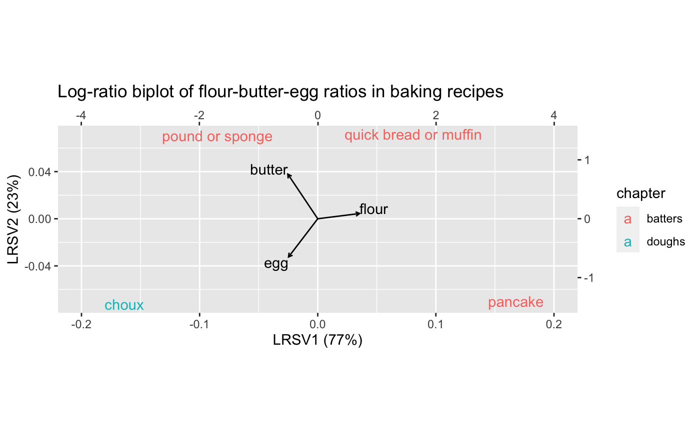
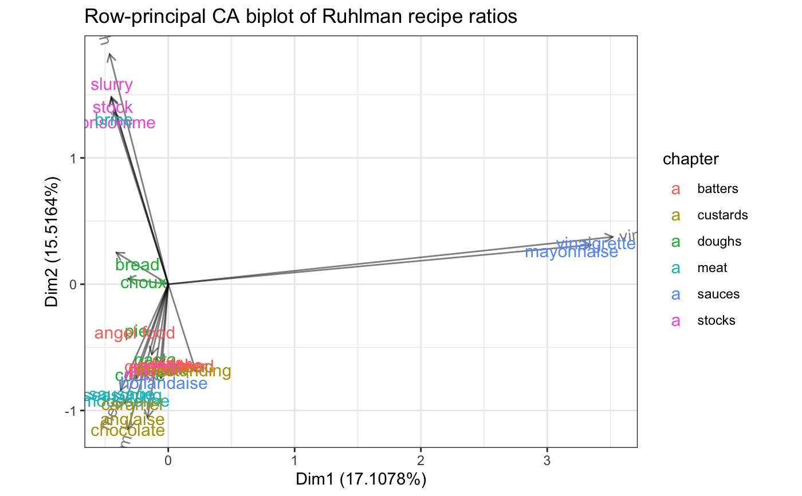

ratios.RdRatios of ingredients for several basic recipes presented in a popular cooking book.
data(ratios)
A tibble.
Ruhlman (2009).
Ruhlman M (2009) Ratio: The Simple Codes Behind the Craft of Everyday Cooking. Scribner, ISBN-13: 978-1416571728.
# Log-ratio analysis of shared ingredients in Ruhlman's recipe ratios data(ratios) ratios %>% dplyr::select(chapter, recipe, flour, egg, butter) %>% dplyr::filter(flour > 0 & egg > 0 & butter > 0) %>% dplyr::group_by(flour, egg, butter) %>% dplyr::summarize(chapter = unique(chapter), recipes = stringr::str_c(recipe, collapse = " or ")) %>% dplyr::ungroup() %>% print() -> sub_ratios#>#> # A tibble: 4 x 5 #> flour egg butter chapter recipes #> <dbl> <dbl> <dbl> <chr> <chr> #> 1 1 1 1 batters pound or sponge #> 2 1 2 1 doughs choux #> 3 2 1 0.5 batters pancake #> 4 2 1 1 batters quick bread or muffinsub_ratios %>% dplyr::select(-chapter, -recipes) %>% lra(compositional = TRUE) %>% as_tbl_ord() %>% augment() %>% bind_cols_rows(dplyr::select(sub_ratios, chapter, recipes)) %>% print() -> lra_ratios#> # A tbl_ord of class 'lra': (4 x 2) x (3 x 2)' #> # 2 coordinates: LRSV1 and LRSV2 #> # #> # Rows: [ 4 x 2 | 2 ] #> LRSV1 LRSV2 | chapter recipes #> | <chr> <chr> #> 1 -0.562 1.04 | 1 batters pound or sponge #> 2 -1.33 -0.910 | 2 doughs choux #> 3 1.19 -1.08 | 3 batters pancake #> 4 0.700 0.954 | 4 batters quick bread or muffin #> # #> # Columns: [ 3 x 2 | 1 ] #> LRSV1 LRSV2 | .name #> | <chr> #> 1 1.19 -0.0397 | 1 flour #> 2 -0.876 -1.07 | 2 egg #> 3 -0.788 1.57 | 3 butterlra_ratios %>% confer_inertia("rows") %>% ggbiplot(sec.axes = "cols", scale.factor = .05) + geom_rows_text(aes(label = recipes, color = chapter)) + geom_cols_vector() + geom_cols_text(aes(label = .name), hjust = "outward", vjust = "outward") + expand_limits(x = c(-.2, .2)) + ggtitle("Log-ratio biplot of flour-butter-egg ratios in baking recipes") + expand_limits(x = c(-.35, .35))# Correspondence analysis of Ruhlman's recipe ratios data(ratios) ratios %>% dplyr::select(-chapter) %>% tibble::column_to_rownames("recipe") %>% dplyr::select(-chocolate) %>% ca::ca() %>% as_tbl_ord() %>% augment() %>% mutate_rows(recipe = .name, chapter = ratios$chapter) %>% mutate_cols(ingredient = .name) %>% print() -> ratios_ca#> # A tbl_ord of class 'ca': (31 x 16) x (17 x 16)' #> # 16 coordinates: Dim1, Dim2, ..., Dim16 #> # #> # Rows: [ 31 x 16 | 6 ] #> Dim1 Dim2 Dim3 ... | .name .mass .dist .inertia recipe #> | <chr> <dbl> <dbl> <dbl> <chr> #> 1 -0.247 0.175 0.796 | 1 bread 0.0265 1.75 0.0811 bread #> 2 -0.106 -0.633 1.45 ... | 2 pasta 0.0166 2.37 0.0928 pasta #> 3 -0.257 -0.390 0.236 | 3 pie 0.0199 1.48 0.0437 pie #> 4 -0.0506 -0.711 1.05 | 4 bisc… 0.0199 1.84 0.0672 biscu… #> 5 -0.227 -0.765 0.377 | 5 cook… 0.0199 1.81 0.0650 cookie #> # … with 26 more rows, and 1 more #> # Rows: [ 31 x 16 | 6 ]# variable: chapter <chr> #> # #> # Columns: [ 17 x 16 | 5 ] #> Dim1 Dim2 Dim3 ... | .name .mass .dist .inertia #> | <chr> <dbl> <dbl> <dbl> #> 1 -0.130 -0.555 1.17 | 1 flour 0.114 1.74 0.345 #> 2 -0.430 1.36 -0.0386 ... | 2 water 0.219 1.41 0.437 #> 3 -0.0643 -0.646 1.50 | 3 egg 0.0464 2.21 0.227 #> 4 -0.346 -0.941 -1.10 | 4 fat 0.126 1.62 0.330 #> 5 0.219 -0.690 1.64 | 5 liqu… 0.0563 2.40 0.323 #> # … with 12 more rows, and 1 more #> # Columns: [ 17 x 16 | 5 ]# variable: ingredient <chr>ratios_ca %>% confer_inertia("rowprincipal") %>% ggbiplot() + theme_bw() + geom_cols_vector(alpha = .5) + stat_cols_chull(geom = "text_radiate", aes(label = ingredient), alpha = .5) + geom_rows_text(aes(label = recipe, color = chapter), size = 4) + ggtitle("Row-principal CA biplot of Ruhlman recipe ratios")